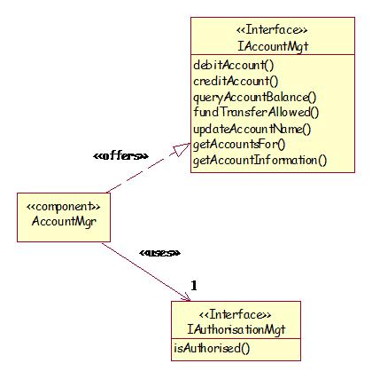

| Example: Component Specification |
 |
|
| Related Elements |
|---|
This example focuses on the description of an individual specified logical component AccountMgr and its corresponding physical component AccountMgr.jar. The following diagram gives an overview of the interfaces offered and used by the AccountMgr component (component specification diagram).  The following diagram shows the data managed via the interface offered by the AccountMgr component (Interface Responsibility Diagram).
Component Interfaces [INTFC-ACCNT-01] IAccountMgt · debitAccount(accountNumber: String, amount: Decimal) - Debits the amount given by amount from the account given by accountNumber - Pre: accountNumber exists and amount is a positive value - Post: account is debited by amount · creditAccount(accountNumber: String, amount: Decimal) - Credits the amount given by amount to the account given by accountNumber - Pre: accountNumber exists and amount is a positive value - Post: account is credited by amount · queryAccountBalance(accountNumber: String): Decimal - Returns the balance of the account given by accountNumber - Pre: accountNumber exists - Post: account value is unchanged · fundTransferAllowed(fromAccount: String, toAccount: String, amount: Decimal): Boolean - Checks that the amount given by amount can be transferred between accounts given by fromAccount and toAccount according to the rules specified by BR-ACCNT-02 Fund Transfer Rules. BR-ACCNT-02 Fund Transfer Rules. Returns true if the transfer is allowed, false otherwise. - Pre: fromAccount and toAccount exist and amount is a positive value - Post: account value is unchanged Non-Functional Requirements The following non-functional requirements are satisfied by this component: · NFR-ITSTND-01: Reuse - this will be a J2EE™ business component. · NFR-CONST-01: Run-time Platform - this component will run on a J2EE™ platform. Implementation Guidance The AccountMgr component provides application independent business behavior and rules for account processing. It is designed to be usable by clients who may be remote or co-located on the same physical or logical server. It should contain no application dependent logic or user interface logic. AccountMgr is a server-side business component. Its client can either be a server side business process component or a remote client. The AccountMgr component reads and writes account data to the persistence store (the RelationalDBMS component). The suggested implementation for this component is a session EJB that encapsulates access to the customer account information. The entities the AccountMgr manages then become entity EJBs. The client only accesses these entity EJBs through the manager EJB. If AccountMgr is implemented as a session EJB, the interface and associated operations become methods on the AccountMgr enterprise bean class. The implementation of the AccountMgr is further detailed in the following work products: · Class diagram [ACCMGR_CD] showing the static class diagram relating the various EJB and session beans · Interaction diagram [ACCMGR_ID] showing how the major services offered by the AccountMgr are supported by the proposed design The physical component built to the AccountMgr specification is AccountMgr.jar. Description of the Physical Component AccountMgr.jar Responsibilities Refer to the responsibilities of the specified logical component AccountMgr. Reference The AccountMgr.jar groups all the classes used to implement the AccountMgr specified component. Non-functional requirements The following non-functional requirements are satisfied by this component: · NFR-SZ-01: No individual jar files will exceed 250 Kb in size · NFR-ITSTND-01: Reuse - this will be a J2EE™ business component. · NFR-CONST-01: Run-time Platform - this component will run on a J2EE™ platform. |

Licensed Materials - Property of IBM |